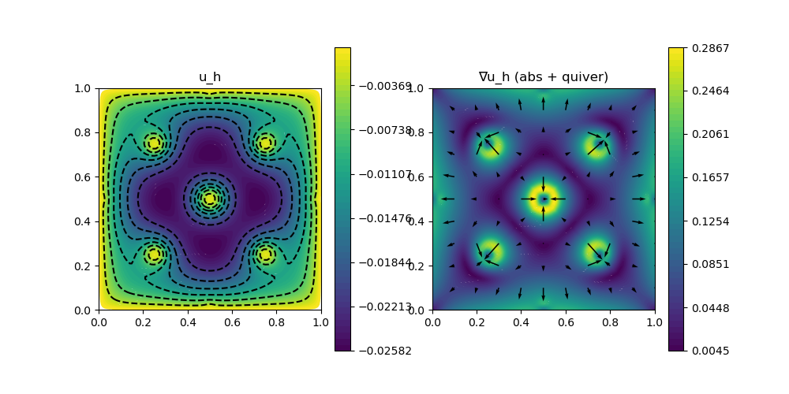

208 : Obstacle Problem 2D
This example computes the solution $u$ of the nonlinear obstacle problem that seeks the minimiser of the energy functional
\[\begin{aligned} E(u) = \int_\Omega \lvert \nabla u \rvert^2 dx - \int_\Omega f u dx \end{aligned}\]
with some right-hand side $f$ within the set of admissible functions that lie above an obstacle $\chi$
\[\begin{aligned} \mathcal{K} := \lbrace u \in H^1_0(\Omega) : u \geq \chi \rbrace. \end{aligned}\]
The obstacle constraint is realised via a penalty term that is automatically differentiated for a Newton scheme.
module Example208_ObstacleProblem2D
using GradientRobustMultiPhysics
using ExtendableGrids
using GridVisualize
# define obstacle and penalty kernel
const f = DataFunction([-1])
const χ! = (result,x) -> (result[1] = (cos(4*x[1]*π)*cos(4*x[2]*π) - 1)/20)
function obstacle_penalty_kernel!(result, input, x)
χ!(result, x) # eval obstacle
result[1] = min(0, input[1] - result[1])
return nothing
end
function main(; Plotter = nothing, verbosity = 0, penalty = 1e4, nrefinements = 6, FEType = H1P1{1})
# set log level
set_verbosity(verbosity)
# choose initial mesh
xgrid = uniform_refine(grid_unitsquare(Triangle2D), nrefinements)
# generate problem description
Problem = PDEDescription("obstacle problem")
add_unknown!(Problem; unknown_name = "u", equation_name = "obstacle problem")
add_operator!(Problem, [1,1], LaplaceOperator(1.0; store = true))
add_operator!(Problem, [1,1], NonlinearForm([Identity], [1], Identity, obstacle_penalty_kernel!, [1,1]; name = "eps^{-1} ||(u-χ)_||", dependencies = "X", factor = penalty, quadorder = 0, newton = true) )
add_boundarydata!(Problem, 1, [1,2,3,4], HomogeneousDirichletBoundary)
add_rhsdata!(Problem, 1, RhsOperator(Identity, [0], f; store = true))
# create finite element space and solution vector
FES = FESpace{FEType}(xgrid)
Solution = FEVector("u_h",FES)
# solve
@show Problem Solution
solve!(Solution, Problem; show_statistics = true, maxiterations = 20)
# plot
p = GridVisualizer(; Plotter = Plotter, layout = (1,2), clear = true, resolution = (1000,500))
scalarplot!(p[1,1], xgrid, nodevalues_view(Solution[1])[1], levels = 6, title = "u_h")
scalarplot!(p[1,2], xgrid, view(nodevalues(Solution[1], Gradient; abs = true),1,:), levels = 0, colorbarticks = 8, title = "∇u_h (abs + quiver)")
vectorplot!(p[1,2], xgrid, evaluate(PointEvaluator(Solution[1], Gradient)), spacing = 0.1, clear = false)
end
endThis page was generated using Literate.jl.
Default output:
julia> Example208_ObstacleProblem2D.main()
Explored path: SparsityDetection.Path(Bool[], 1)
PDE-DESCRIPTION
===============
system name = obstacle problem
id | unknown name / equation name
[1] | u / obstacle problem
LHS block | PDEOperator(s)
[1,1] | (∇u,∇v) (APT = SymmetricBilinearForm, AT = ON_CELLS, regions = [0])
| eps^{-1} ||(u-χ)_|| [AD-Newton] [∂u] (APT = NonlinearForm, AT = ON_CELLS, regions = [0])
RHS block | PDEOperator(s)
[1] | (Constant([-1]), id(v)) (APT = LinearForm, AT = ON_CELLS, regions = [0])
BoundaryOperator[1] : HomogeneousDirichletBoundary -> [1, 2, 3, 4]
Problem =
Solution =
FEVector information
====================
block | ndofs | name (FEType)
[ 1] | 8321 | u_h (H1P1{1})
ITERATION | LSRESIDUAL | NLRESIDUAL | TIME ASSEMBLY/SOLVE/TOTAL (s)
-----------------------------------------------------------------------
init | | 4.09e+00/2.98e-02/4.12e+00
1 | 1.279712e-15 | 1.741413e+00 | 9.02e-02/2.43e-02/1.15e-01
2 | 1.184654e-15 | 6.073690e-02 | 7.42e-02/3.59e-02/1.11e-01
3 | 9.591039e-16 | 4.050710e-02 | 7.73e-02/4.67e-02/1.25e-01
4 | 7.400472e-16 | 2.865242e-02 | 7.71e-02/3.01e-02/1.08e-01
5 | 5.510291e-16 | 1.847692e-02 | 7.58e-02/2.78e-02/1.04e-01
6 | 5.119349e-16 | 9.456218e-03 | 8.01e-02/2.73e-02/1.08e-01
7 | 4.856131e-16 | 2.891193e-03 | 7.54e-02/2.87e-02/1.05e-01
8 | 4.783599e-16 | 3.887883e-04 | 7.34e-02/4.42e-02/1.18e-01
9 | 4.928274e-16 | 4.928274e-16 | 7.71e-02/2.70e-02/1.05e-01
total | | 4.80e+00/3.22e-01/5.12e+00
